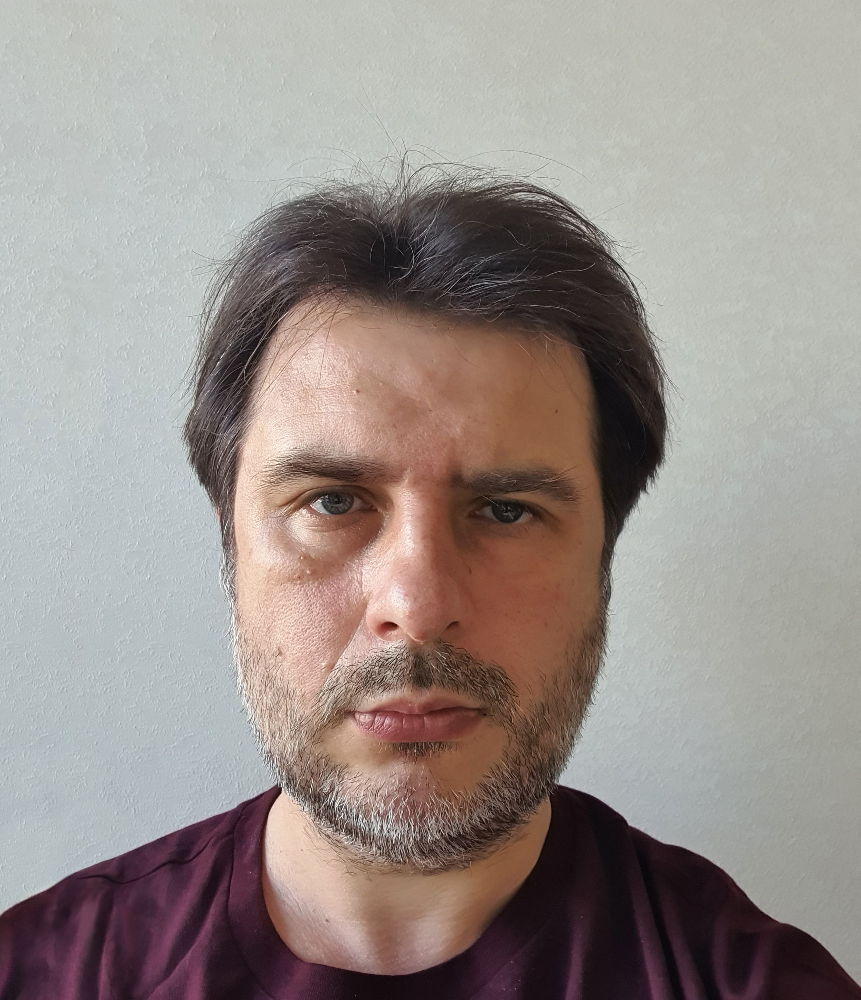

Загальна інформація
У 1996 році закінчив механіко-математичний факультет Київського університету імені Тараса Шевченка
Наукові ступені які маєте, рік присвоєння, організація, де захищалися,
спеціальність.
У 1999 році в Київському національному університеті імені Тараса Шевченка захистив дисертацію на здобуття наукового ступеня кандидата фізико-математичних наук.
В 2011 році в Київському національному університеті імені Тараса Шевченка захистив дисертацію на здобуття наукового ступеня доктора фізико-математичних наук.
Вчені звання, коли присвоєне.
У 2021 році присвоєне вчене звання доцента.
У які роки та на яких посадах працювали.
Працював у Київському національному університеті імені Тараса Шевченка на посадах асистента (1997-2005), доцента (2005-2008, 2011-2019) та професора (з 2019 і дотепер).
Викладацька робота
Читає нормативні курси: Конкретна математика, Дискретна математика, Лінійна алгебра, Алгебра і теорія чисел, Математична логіка, Математична криптографія, Інформаційна безпека
Наукова діяльність
Основні напрямки наукової діяльності: теорія груп, групи підстановок, групи автоморфізмів кореневих дерев, групи і напівгрупи автоматних підстановок, інформаційна безпека, криптологія.
Під науковим керівництвом захистилися чотири кандидати фізико-математичних наук.
Основні публікації
- A. Oliynyk. Green’s relations in semigroups of automaton transformations. Kyiv University Bulletin, Physics and Mathematics Series, (4):91–97, 1997. (in Ukrainian).
- A. Oliinyk. On free semigroups of automaton transformations. Mathematical Notes, 63(2):215–224, 1998.
- Andrij S. Oli ̆ınyk. Free groups of automatic permutations. Dop. NAS Ukraine, (7):40–44, 1998. (in Ukrainian).
- Andrij Olijnyk. Free products of C2 as groups of finitely automatic permutations. Voprosy Algebry (Gomel), 14:158–165, 1999.
- A. Oliynyk. Free abelian groups of finite automata. Kyiv University Bulletin, Physics and Mathematics Series, (1):74–77, 1999. (in Ukrainian).
- A. S. Oli ̆ınyk and V. I. Sushchanski ̆ı. A free group of infinite unitriangular matrices. Mat. Zametki, 67(3):382–386, 2000.
- A. S. Oliinyk. Free products of finite groups and groups of finitely automatic permutations. Tr. Mat. Inst. Steklova, 231(1):323–331, 2000. (in Russian).
- A.S.Oliynyk, I.I.Reznikov, and V.I.Sushchansky. Transformation semigroups defined by Mealey automata over finite alphabet. In Proceedings of the Third International Algebraic Conference in Ukraine (Suny, 2001), pages 80–99. Kyiv: Institute of Mathematics NAS Ukraine, 2002. (in Russian).
- Andrij Olijnyk and Vitaly Sushchansky. Representations of free products by infinite unitriangular matrices over finite fields. International Journal of Algebra and Computation, 14(5-6):741–749, 2004.
- A. S. Oliynyk and V. I. Sushchansky. Conjugacy in inverse semigroups of partial automaton transformations over finite alphabet. Dop. NAS Ukraine, (9):35–39, 2004 (in Russian).
- T. V. Bogdzievych and A. S. Oliynyk. up-wreath powers of permutation groups over finite sets. Kyiv University Bulletin, Mechanics and Mathematics Series, (13-14):44–48, 2004. (in Ukrainian).
- C. K. Gupta, N. D. Gupta, and A. S. Oliynyk. Free products of finite groups acting on regular rooted trees. Algebra and Discrete Mathematics, (2):91–103, 2007.
- Yaroslav Lavrenyuk, Volodymyr Mazorchuk, Andrij Oliynyk, and Vitaliy Sushchansky. Faithful group actions on rooted trees induced by actions of quotients. Communications in Algebra, 35(11):3759–3775, 2007.
- Yaroslav Lavrenyuk and Andriy Oliynyk. On wreath products over tree-orderedsets. Kyiv University Bulletin, Physics and Mathematics Series, (3):24–27, 2007. (in Ukrainian).
- Karin Cvetko-Vah, Damjana Kokol Bukovˇsek, Andriy Oliynyk, Tomaz Koˇsir, Ganna Kudryavtseva, and Yaroslav Lavrenyuk. Semitransitive subsemigroups of the symmetric inverse semigroups. Semigroup Forum, 78(1):138–147, 2009.
- A. S. Oliynyk. Amalgamated products of infinite cyclic groups generated by finite automata. NaUKMA Academic Records, Physics and Mathematics Series, 100:3–6, 2010. (in Ukrainian).
- A. S. Olijnyk. Two-state automorphisms of rooted trees and free products of finite groups. Kyiv University Bulletin, Physics and Mathematics Series, (3):74–76, 2010.
- Andriy Oliynyk. Groups of linear automata. Algebra and Discrete Mathematics, 10(1):97–103, 2010.
- Andrij Olijnyk, Vitaly I. Sushchansky, and J. K. Slupik. Inverse semigroups of partial automaton permutations. International Journal of Algebra and Computation, 20(7):923–952, 2010.
- A. S. Oliynyk. Groups of RS-automaton transformations. Dop. NAS Ukraine, (11):12–17, 2010. (in Russian).
- A. Oliynyk and V. Sushchanskii. The groups of ZC-automaton transformations. Siberian Mathematical Journal, 51(5):879–891, 2010.
- V.V. Nekrashevich, A.S. Oliinyk, and V.I. Sushchanskii. Metric properties of functions defined by partial automata. Ukrainian Mathematical Journal, 62:1741–1751, 2011.
- Andriy Oliynyk. Free semigroups in wreath powers of transformation semigroups. Algebra and Discrete Mathematics, 10(2):96–106, 2010.
- A. S. Oliynyk. Isomorphic representations of amalgamated free products of infinite cyclic groups by finite state automorphisms of p-adic rooted tree. Dop. NAS Ukraine, (12):20–24, 2010. (in Ukrainian).
- A. S. Oliynyk. Finite state quotients of free products of monogenic semigroups. Mathematical Bulletin of the Shevchenko Scientific Society, (7):188–204, 2010. (in Ukrainian).
- A. Oliynyk. Finite state wreath powers of transformation semigroups. Semigroup Forum, 82(3):423–436, 2011.
- A. S. Oliynyk. Free products of cyclic 2-groups in groups of infinite unitriangular matrices. Mathematical Bulletin of the Shevchenko Scientific Society, (9):231–237, 2012. (in Ukrainian).